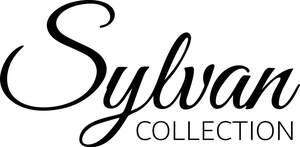

Trade Mark Journal No.2025/047 21 November 2025
UK00004290896 7 November 2025 (6,20,40)

- Class 6
- Metal stampings; Metal railings; Railings of metal; Latticework of metal; Bracings of metal; Rods of metal; Metal rods; Handrails of metal; Balusters of metal; Sculptures of metal; Balustrades of metal; Hasps of metal; Metal hardware; Molds of metal; Metal castings; Extrusions of metal; Metal extrusions; Balustrading of metal; Metal rails; Rails of metal; Metal mouldings; Knobs of metal; Metal knobs; Metal ironmongery; Metal moldings; Metal forgings; Sculptures of non-precious metal; Rings of metal; Metal doorknobs; Metal hinges; Metal hooks; Hooks of metal; Trays of metal; Statues of non-precious metal; Fittings of metal for furniture; Furniture (Fittings of metal for -); Furniture for doors [metal]; Door furniture of metal; Shelving frames of metal [other than furniture]; Catches (Furniture -) of metal; Shelf supports of metal [other than parts of furniture]; Fittings of metal for beds; Beds (Fittings of metal for -); Stair rails of metal.
- Class 20
- Furniture of metal; Metal furniture; Metal bedsteads; Metal shelving [furniture]; Racks being furniture of metal; Shelving made of metal [furniture]; Display fittings [furniture] of metal; Garden furniture made of metal; Doors made of metal for furniture; Furniture; Metal shelving; Shelf supports of metal [parts of furniture]; Furniture and furnishings; Furniture made of steel; Bed frames of metal; Bed frames; Stair rods; Metal curtain rods; Metal curtain rails; Metal curtain rings; Tie back hooks of brass [curtain]; Curtain embraces for holding back curtains; Curtain hooks made of metal; Curtain rods; Curtain hooks; Curtain rails; Curtain poles; Curtain tie-backs; Coffee tables; Tea tables; Table tops; Dining tables; Bedside tables; Table legs; Tables; Pedestal tables; Dining room tables; Folding tables; Side tables; Display tables; Tables [furniture]; Marble tables.
- Class 40
- Metal plating; Plating (Metal -); Metal brazing; Metal coating; Metal stamping; Metal moulding; Metal polishing; Metal hardening; Metal tempering; Metal forging; Metal plating and laminating; Metal casting; Shaping of metal components; Treatment of metal parts to prevent corrosion using hot-dip galvanizing and powder coating processes; Metal finishing; Treatment of metal; Metal treatment; Metal fabrication and finishing services; Cutting of metal; Metal cutting; Processing of metal surfaces using precision grinding techniques.
Thomas Brenton LIMITED